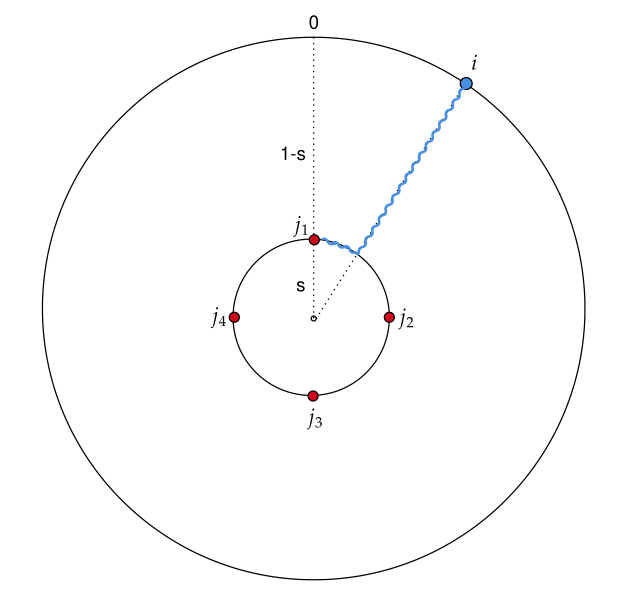
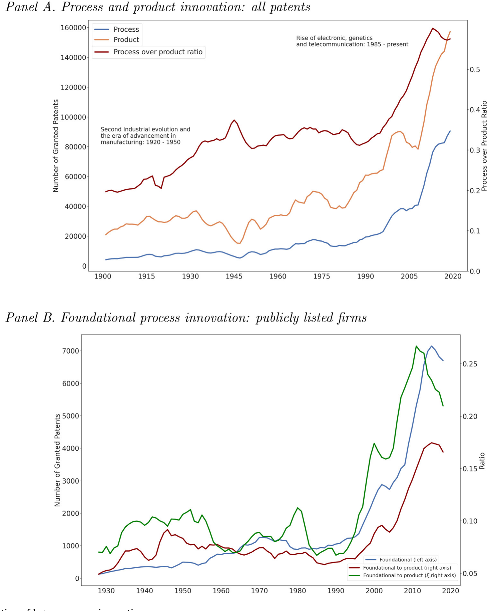
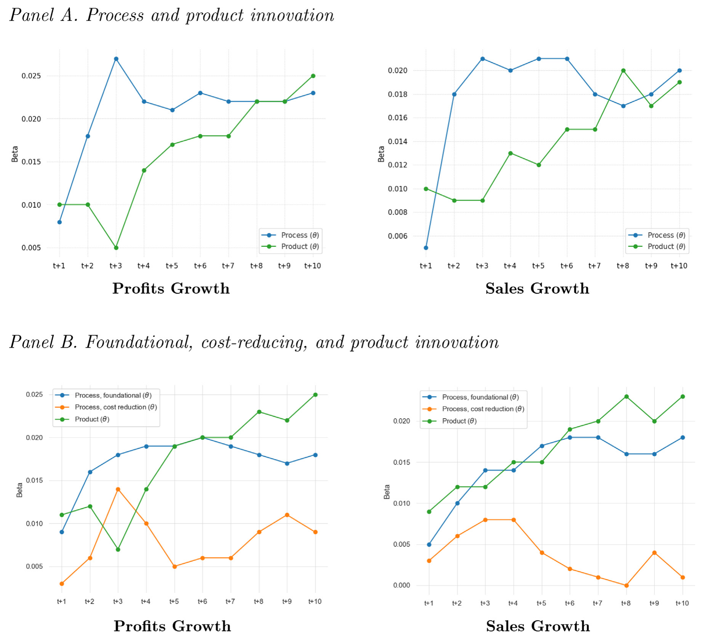
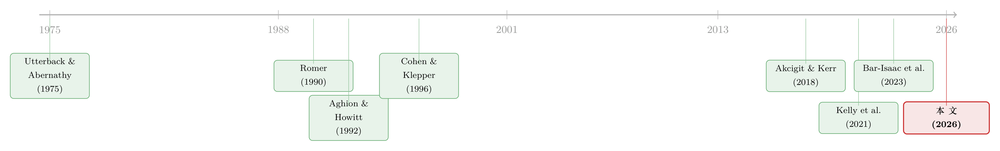

把「工艺创新」一刀切开：地基工艺如何长出新产品
本文读的是 Tham, Baslandze, Sojli & Liu (2026, Journal of Financial Economics)：作者把一向被笼统对待的「工艺创新」拆成两类——只是把现有东西做便宜的降本工艺，和真正改写生产技术、让原本造不出的产品成为可能的地基工艺 (foundational process)。用 1900–2020 年上百万份专利文本做分类后，他们发现：真正驱动企业持续增长的，是地基工艺；而且它主要不是直接起作用，而是先孵化出新产品，再由新产品把增长推上去。
1 一个被我们随手丢进同一个篮子的东西
先讲两个故事。
第一个：特斯拉用「拆箱式 (unboxed)」总装把车身拆成若干模块，像搭乐高一样并行组装；雷神 (Raytheon) 用 3D 打印减少材料浪费、压低成本、加快产线。这些都是了不起的改进，它们让已经存在的东西造得更快、更省。
第二个：半导体里的光刻 (photolithography) 法，让电路能够被刻到越来越小的硅片上；生物学里的聚合酶链式反应 (PCR) 法，让 DNA 序列得以被快速复制。这两样东西本身不是产品，但它们一出现，智能手机、可穿戴设备、更小更强的笔记本，基因检测、疫苗、新疗法——一整串原本根本不存在的产品，才有了被造出来的可能。
现在问一个看似无聊、实则要命的问题：上面这两类东西，能算作同一种创新吗？
经济学的标准答案，长期以来其实是「差不多算」。我们把创新粗分为两类——产品创新 (product innovation)，造出新的或更好的产品；工艺创新 (process innovation)，发明生产或交付产品的新方法。这个二分法很经典 (Cohen and Klepper, 1996)。可一旦进了增长模型，无论是 Romer (1990)、Grossman and Helpman (1991) 还是 Aghion and Howitt (1992)，产品与工艺创新基本是同构 (isomorphic) 的——都被简化成「提高某个全要素生产率参数」的一记推力，彼此之间没有分工，更谈不上谁催生谁。
真正被忽略的，不只是「产品 vs 工艺」这一层区分，而是工艺创新内部的异质性。3D 打印和光刻法都被归为「工艺」，可前者只是把旧产品做便宜，后者却打开了一扇通往新产品的门。把它们塞进同一个参数里，等于把「省钱」和「开天辟地」当成一回事。
这篇论文要做的，就是把「工艺创新」这个篮子一刀切开。
2 核心概念：技术可能性前沿（TPF）
要把两类工艺讲清楚，作者先给了一个极简但很巧的模型。它的全部精髓，落在一个词上：技术可能性前沿 (technological possibility frontier, TPF)。
想象一条经典的 Salop 圆 (Salop, 1979)：圆周上均匀分布着 2π 个消费者，每个人有自己的口味（用圆周上的角度表示）。一个垄断厂商在半径 s < 1 的内圈上摆放它的 n 个产品品种。这个内圈，就是 TPF——它代表「以现有生产技术，企业最高能做到的产品质量」。

Figure 1: Consumer preferences and product-consumer match
关键在于消费者怎么评价一个产品。作者让质量同时含有纵向和横向两个维度（这一步借自 Bar-Isaac et al., 2023）：
$$q(i,j) = \chi - \lambda(1-s) - \mu s\,|i-j|$$
其中 χ 是质量上限，i 是消费者的口味位置，j 是产品位置。读这个式子要分两步走：
- 纵向质量
χ - λ(1-s)：内圈半径s越大，TPF 越贴近消费者所在的外圈，(1-s)越小，质量越高。这就是「技术更先进」的含义——前沿被往外推。 - 横向匹配
-μs|i-j|：消费者还要从内圈「走」一段弧到最近的产品，走得越远（口味越不匹配）效用越低。
于是把每个产品的需求 c = q(i,j)p^{-ε} 在消费者上加总，得到厂商的总需求（论文式 (2)）：
$$c = \Big[2\pi\big(\chi-\lambda(1-s)\big) - \mu s\,\frac{\pi^2}{n}\Big]\,p^{-\varepsilon}$$
这里藏着一个很漂亮的互补性：纵向质量和横向匹配互相放大。当 n→∞（所有口味都被满足），需求变成 2π(χ-λ(1-s))p^{-ε}，随 s 递增；而当纵向质量 s 高时，多铺一个品种、把口味匹配做好就更值钱。正如论文所举的例子：芯片因为光刻而变小变强（s 提高）之后，智能手机、智能手表这些差异化产品才显出高价值；要是搁在低质技术下，同样的品种只会是「又大又丑的手表」，横向差异化根本没人买账。
厂商的问题：一个可以拆开看的方程
接下来是模型的心脏。厂商同时选价格 p 和品种数 n，最大化利润——收入减生产成本，再减创新成本（论文式 (3)）。这个方程值得一块块标注着看：
解出来的价格是熟悉的成本加成（论文式 (4)）：
$$p^* = \frac{\varepsilon}{\varepsilon-1}\,k^{-1}$$
而最优品种数同时取决于 TPF（s）和效率（k）（论文式 (5)）：
$$n^* = \left(\frac{1}{\varepsilon}\Big(\frac{\varepsilon}{\varepsilon-1}k^{-1}\Big)^{1-\varepsilon}\mu s\,\pi^2\right)^{\gamma/(1+\gamma)}$$
两类工艺，在模型里走的是两条路
现在，反转出现了。两类工艺创新，在这个模型里恰好对应两个不同的参数：
- 地基工艺：推大
s，即把 TPF 往外推。纵向质量上去了，需求上去了，每个品种的回报上去了——于是厂商既造更多品种，又造更高质量的品种。这就是论文的 命题 1（Product Introduction）：地基工艺创新带来更多、更高质量的产品引入。 - 降本工艺：推大
k（降低边际成本k^{-1}）。价格下降、需求上升，也会激励多造品种——但新品种的纵向质量s没变，谈不上「新」，而且引入数量明显更少。
一句话：降本工艺让你把同一层楼的房间装修得更便宜；地基工艺给你多盖了一层楼。模型用最干净的方式，把「工艺创新催生产品创新」这件长期被增长模型抹平的事，重新刻进了结构里。
3 怎么把「地基」从专利里量出来
模型很美，但真正关键的一步在于：地基工艺这种东西，怎么在数据里被识别？
作者的做法分两层。第一层，区分产品 vs 工艺专利。他们没用预设词表，而是用一种基于上位词 (hypernym) 的「词袋」方法：claim 的前序和标题若指向一个活动（process、method 这类「activities」的下位词），判为工艺专利；若指向一个实体（product、device 这类「physical entities」的下位词），判为产品专利。这个方法不依赖具体词汇，因此能一路回溯到 1976 年专利全文电子化之前，把时间线拉到 1900 年，并覆盖 60 多个国家——这正是相对 Bena and Simintzi (2025) 用 claim 文本的最大突破。

Figure 3: Historical evolution of heterogeneous innovations
第二层，也是最巧的一层：在工艺专利里，再把地基从降本中分出来。这里他们顺着 Kelly et al. (2021) 的专利文档相似度思路：地基工艺专利，被定义为那些「与本企业过去的产品专利不像，却与本企业未来的产品专利很像」的工艺专利。直觉非常贴合模型——地基工艺是开天辟地的新方法，所以和历史产品脱节；但它一旦出现，就会孵化出一串新产品，所以和未来产品高度相似。
结果如何？1900–2020 年间美国授予的专利中，超过 58% 是产品专利；在工艺专利里，69% 被判为降本型，剩下约 31% 是地基型。两个交叉验证很有说服力：地基工艺专利引用了明显更多的非专利文献 (non-patent literature, NPL)，也就是学术论文——说明它们是「deep-tech」式的、吃基础科学外溢的创新（呼应 Akcigit et al., 2020）；而降本工艺则与更低的劳动力成本、以及 10-K/10-Q 年报里「效率提升、降本」类措辞高度相关。
4 主要结果：谁带来的是「持续」的增长
有了这把尺子，作者用局部投影回归 (local projection, Jordà, 2005) 直接估计创新冲击在 1–10 年里的脉冲响应。这一步是全文的落点。

Figure 6: Heterogeneous innovations and firm growth
结果可以这样读：
- 产品创新与工艺创新都带来更高的企业增长（利润、销售、用工、资本、TFP）。工艺创新在短期（一到五年）冲击尤其大，而两类创新在 10 年的累积效应上量级相当。
- 把工艺创新拆开后，降本工艺像它该有的样子：与未来销售、利润的关系集中在短期（最多三年），这正是「把产品做便宜、压价多卖」的直接、即时效应。
- 地基工艺则完全是另一种节奏：它带来更高、更持续的增长，影响延伸到中期（最长约七年）。
但真正点睛的，是地基工艺怎么起作用。作者发现，归因于产品创新的那部分持续增长，主要来自那些建立在地基工艺之上的产品——即与地基工艺专利高度相似、或直接引用了它们的产品。换句话说，地基工艺很大程度上不是直接抬高利润，而是先长出新产品，再由这些「站在新地基上」的产品，把增长一路托起来。引用了地基工艺的产品专利，市场估值更高、质量也更优。
最后，为了证明这套逻辑不止停留在专利层面，作者动用了新数字化的 NBER FDA「橙皮书」数据 (Durvasula et al., 2023)，把获批的小分子药品和它们的专利对应起来。结论一致：建立在地基专利之上的药品，市场价值更高、销售更多。从硅片到药片，故事是同一个。
5 文献脉络
把这篇论文放回它的坐标系，脉络其实很清晰。
最早，Utterback and Abernathy (1975) 在产业生命周期里就讨论过产品与工艺创新的此消彼长；但那一脉（以及后来的 Klepper, 1996；Cavenaile et al., 2024）里的工艺创新，几乎只有降本这一面，对产品创新没有反哺。
接着，内生增长的三座大山——Romer (1990)、Grossman and Helpman (1991)、Aghion and Howitt (1992)——把创新放进了增长引擎，却把产品与工艺创新揉成了同构的一团。Cohen and Klepper (1996) 在实证上把两者分开，但工艺内部的异质性仍是盲区。

然后，测量技术成熟了。Kelly et al. (2021) 用专利文本的相似度，第一次把「技术创新的重要性」做成了跨越百年的可量化指标；Akcigit and Kerr (2018) 则在理论上引入了异质性创新。与此同时，Bar-Isaac et al. (2023) 给 Salop 圆加上了纵向质量维度，Baslandze et al. (2023) 把品种扩张装进了同一个框架。
而这篇论文，正是站在这几股力量的交汇点上：借 Kelly et al. (2021) 的文本相似度去识别地基工艺，借 Bar-Isaac 和 Baslandze 的工具去建模 TPF 的扩张与品种创生，最终把「工艺如何催生产品、再驱动增长」这条一直缺失的因果链补了上来。它和 Berlingieri et al. (2025) 关于「创新爆发 (innovation bursts)」的证据彼此呼应——某些创新确实能引爆一串产品的涌现。
（关于专利、创新与增长如何在企业层面相互作用，可参见《谁的专利，配得上新标准？——标准化如何在竞争、创新与增长之间走钢丝》。）
6 评论与延伸（Q&A + 研究方向）
(a) 几个可能的疑问
Q：「地基工艺」和「重要专利」「高引用专利」到底有什么不一样？
不一样的核心在于方向性。地基工艺的定义不是「被引用多」，而是「与本企业过去产品不像、与未来产品像」——它捕捉的是一种时间上的孵化关系：先有这个新方法，后面才长出一串新产品。一个被同行大量引用的产品专利可以很重要，但它未必为后续的新产品铺了路。
Q：用「与未来产品相似」来定义地基工艺，会不会是循环论证？反正它后面跟着产品，当然预测产品。
这是最该警惕的点。定义里用了未来信息，所以「地基工艺→更多产品」在某种程度上是被构造出来的。但论文的增长结果（利润、销售、TFP 的脉冲响应）和质量/估值结果不是定义的直接推论；尤其 FDA 橙皮书那条线——地基专利对应的药品卖得更多、值更多钱——是落在专利体系之外的独立验证，循环论证较难解释它。
Q：降本工艺只在三年内有效、地基工艺能管七年，这个差别可信吗？
方向上很符合直觉：压成本带来的价格优势容易被竞争对手追平，是一次性的；而打开新产品空间是会复利的。但「七年」这个具体窗口依赖局部投影的设定和样本，跨越百年、跨越 60 国的异质性很大，把它当成定性结论（持续 vs 短暂）比当成精确数字更稳妥。
Q：地基工艺专利引用更多学术论文（NPL），这能说明什么？
它给「基础科学外溢到应用科学」提供了企业层面的直接证据，和 Akcigit et al. (2020) 的发现一致。地基工艺像是把大学实验室里的基础研究「翻译」成企业能用的生产方法的那一道工序——这也解释了为什么 R&D 密集、知识与技术存量厚的「deep-tech」企业在创造地基工艺上有比较优势。
Q：把工艺切成两类，对增长政策有什么含义？
如果驱动持续增长的是地基工艺、而它又吃基础科学的外溢，那么单纯补贴「降本」（自动化、3D 打印）可能只买到短期的销售脉冲；想要长期增长，得在更上游——基础研究、deep-tech——发力。这把「该补贴哪种创新」的讨论，从笼统的「R&D」细化到了「哪一类 R&D」。
Q：这套测量能搬到别的国家、别的年代吗？
能，这正是用标题（而非 claim 全文）做分类的好处——它把观测窗口推到 1976 年之前、铺到 60 多个国家。作者也用 Maxval 的知识产权专家分类和 IP Australia 的审查员分类做了外部校验。代价是标题信息更稀疏，跨国语言与制度差异会引入噪声，跨国结果需谨慎。
(b) 几个可能的研究问题与提案
1. 地基工艺与公司债定价 / 信用风险
【经济故事】地基工艺意味着「未来一串新产品」的期权价值，但也意味着更长的回报周期和更高的前期不确定性。对股东或许是利好，对债权人却未必——长周期、高研发的 deep-tech 现金流更靠后、更不确定。一个自然的问题是：地基工艺密集的企业，信用利差是更高还是更低？ 【可行性】中。把本文的企业层面地基工艺指标，和 TRACE 公司债利差、评级迁移对接即可，识别上可用同行业内的相对地基强度。难点是地基指标本身的内生性与度量误差。
2. 外资持有人是否「读得懂」地基工艺
【经济故事】地基工艺的价值藏在专利文本里，信息高度专业化。外资机构投资者相对本土投资者，可能在解读这类 deep-tech 信号上处于劣势（也可能因全球视野而更强）。外资持股比例高的企业，其地基工艺被市场定价的速度是否更慢？ 【可行性】中。需要 FactSet/13F 类持股数据匹配本文专利指标，识别可借助被动指数纳入等准外生的外资持股变动。结论方向不确定，但 doable。
3. 地基工艺与企业债务期限结构
【经济故事】既然地基工艺的回报更持续、周期更长，理论上企业应当用更长期限的负债去匹配。地基工艺密集度能否预测债务期限的拉长？ 【可行性】中高。Compustat 债务期限数据 + 本文专利指标即可起步，面板固定效应加行业-年度控制。挑战是反向因果（融资约束反过来影响创新选择）。
4. 把降本工艺当作产品创新的「负向冲击」做事件研究
【经济故事】模型预测降本工艺只带来同质化的低质品种。能否找到具体的降本工艺采纳事件（如某产线引入 3D 打印），用事件研究看它之后的产品质量是否真的停滞、而仅有数量与价格的短期反应？ 【可行性】中。需要可定位时点的工艺采纳事件，识别较干净但样本可能稀少。
5. 地基工艺的跨国外溢与流动性
【经济故事】本文已把测量铺到 60+ 国。一个延伸是：一国的地基工艺突破，是否通过供应链或专利引用外溢到他国企业的产品创新？这关系到技术扩散的边界。 【可行性】低到中。跨国专利引用网络数据可得，但把「外溢」与「同期共同冲击」分开，识别难度大，需要相对外生的技术冲击来源。
7 我的判断
这篇论文最大的贡献，是把一个被增长模型抹平了三十年的区分重新立了起来：工艺创新内部，「降本」和「奠基」是两种东西，前者让旧产品更便宜，后者让新产品成为可能；而真正驱动持续增长的是后者，且它主要通过孵化新产品来起作用。配上一个干净的 TPF 模型和一套能回溯到 1900 年、铺到 60 多国的文本测量，这是把理论、测量、实证三件事拧成一股绳的扎实工作。FDA 橙皮书那条独立验证，尤其加分。
对识别，我最大的保留仍是那把尺子本身。「与未来产品相似」的定义内嵌了前瞻信息，使得「地基工艺→更多产品」难免有几分自我实现的味道；增长与估值结果虽不是定义的直接产物，但度量误差和遗漏变量（研发能力强的企业既造地基工艺、又会增长）仍可能在背后推动相关性。局部投影给的是动态相关，不是因果——文中也没有一个真正外生的地基工艺冲击。
后续我最想看到的，是一次准实验：找到一个让某些企业外生地获得地基工艺能力（比如某项基础科学突破、某次专利池开放、某项公共研究资助）的冲击，再看下游产品与增长的反应。那将把这篇论文从「一个非常有说服力的相关性叙事」，推向「因果」。在那之前，它已经给了我们一把好用的新尺子，和一个值得继续追问的好问题。
参考文献
- Aghion, P., Howitt, P. (1992). A model of growth through creative destruction. Econometrica 60, 323–351.
- Akcigit, U., Hanley, D., Serrano-Velarde, N. (2020). Back to basics: Basic research spillovers, innovation policy, and growth. Review of Economic Studies 88(1), 1–43.
- Akcigit, U., Kerr, W.R. (2018). Growth through heterogeneous innovations. Journal of Political Economy 126(4), 1374–1443.
- Bar-Isaac, H., Caruana, G., Cuñat, V. (2023). Targeted product design. American Economic Journal: Microeconomics 15(2), 157–186.
- Baslandze, S., Greenwood, J., Marto, R., Moreira, S. (2023). The expansion of varieties in the new age of advertising. Review of Economic Dynamics 50, 171–210.
- Bena, J., Ortiz-Molina, H., Simintzi, E. (2022). Shielding firm value: Employment protection and process innovation. Journal of Financial Economics 146, 637–644.
- Bena, J., Simintzi, E. (2025). Machines could not compete with Chinese labor: Evidence from U.S. firms' innovation. Review of Finance 29(6), 1619–1661.
- Berlingieri, G., Ridder, M.D., Lashkari, D., Rigo, D. (2025). Creative destruction through innovation bursts. CEP Discussion Papers DP2095.
- Cohen, W.M., Klepper, S. (1996). Firm size and the nature of innovation within industries: The case of process and product R&D. Review of Economics and Statistics 78(2), 232–243.
- Durvasula, M., Hemphill, C.S., Ouellette, L.L., Sampat, B., Williams, H.L. (2023). The NBER Orange Book dataset: A user's guide. Research Policy 52(7), 1047–1091.
- Grossman, G.M., Helpman, E. (1991). Innovation and Growth in the Global Economy.
- Jordà, Ò. (2005). Estimation and inference of impulse responses by local projections. American Economic Review 95(1), 161–182.
- Kelly, B., Papanikolaou, D., Seru, A., Taddy, M. (2021). Measuring technological innovation over the long run. American Economic Review: Insights 3(3), 303–320.
- Klepper, S. (1996). Entry, exit, growth, and innovation over the product life cycle. American Economic Review 86(3), 562–583.
- Romer, P.M. (1990). Endogenous technological change. Journal of Political Economy 98(5, Part 2), 71–102.
- Salop, S.C. (1979). Monopolistic competition with outside goods. Bell Journal of Economics 10(1), 141–156.
- Utterback, J.M., Abernathy, W.J. (1975). A dynamic model of process and product innovation. Omega 3(6), 639–656.